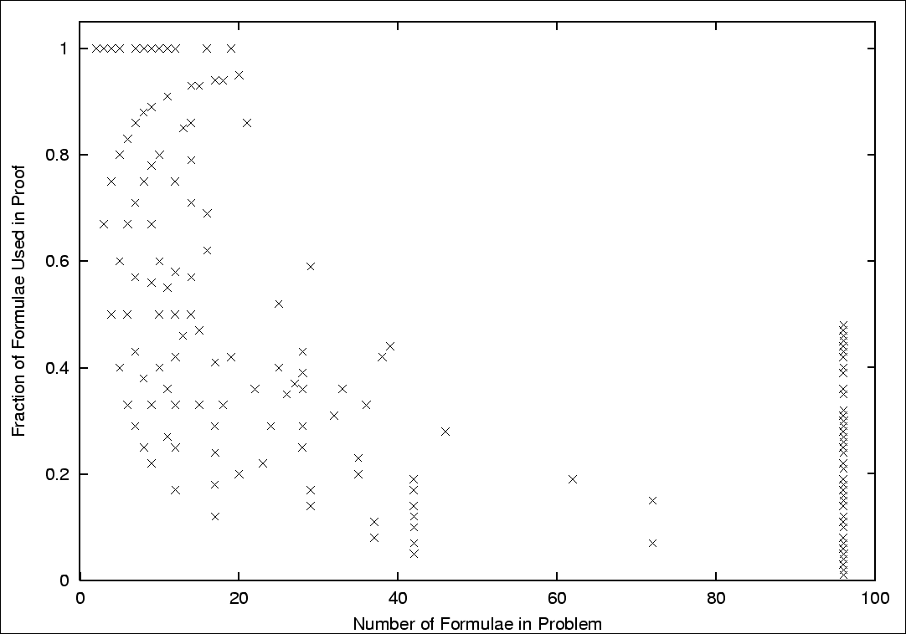

Axiom Reduction

Unnecessary Axioms
- Irrelevant axioms
- Redundant axioms
- 939 FOF problems with axioms in TPTP v2.5.0
- SPASS finds proofs for 513 with a 600s time limit
- Typically a fraction of the axioms used
Recognizing Unnecessary Axioms
- Humans do it, working slowly and carefully
- Limited ATP techniques so far
- Syntactic relevance
- Subsumption style
- Data management style
- Relevancy testing
Close Your Eyes (and maybe I'll kiss you)
- Remove combinations of axioms
- Submit the axiom reduced problem to ATP
- Hope to get lucky (a proof below the PPP)
- Axioms removed combinatorially
- Long ones before short ones
- Less before more